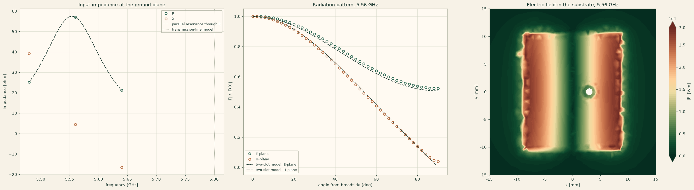
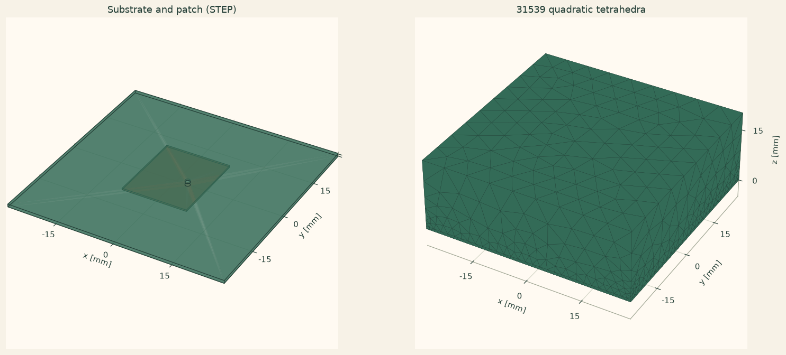

Docs › Examples › Microstrip patch antenna
Antennas · 3D
Microstrip patch antenna
A rectangular patch on a 0.787 mm substrate, fed from below by a 50 ohm coaxial probe, is designed for 5.8 GHz with the transmission-line model.
Run locally with OneSimulation. The example downloads are free. Running them requires an activated runtime. Runtime Alpha 0.2.1a8 · CPython 3.13 on macOS (Apple Silicon), Ubuntu 22.04 (x86-64), and Windows x64. Installation and activation · View pilot plans. Scope of the reference checks.


What it computes
OneSimulation reads the air box with the coaxial line, the substrate and the patch from STEP files and solves the 3D field with second-order Nédélec elements; the patch is a conducting sheet between two mesh regions, the coaxial line ends in a port with its exact TEM mode, a first-order absorbing boundary lets the wave leave, and the far field over the ground plane follows from the field on a half sphere. The script that builds the STEP files comes with the notebook.
What it checks
The resistance peaks at 5.554 GHz with 57.5 ohm (Q = 42), 4.2 % below the transmission-line model with the Hammerstad open-end extension; the match reaches -22.2 dB at 5.56 GHz; the directivity is 7.45 dBi against 7.01 dBi of the two-slot model, the normalized E- and H-plane patterns agree with it to 0.019 and 0.010, and the radiated power equals the power accepted at the port to 2.8 %.
Geometry
Save the STEP files microstrip_patch_antenna.step, microstrip_patch_antenna_patch.step, microstrip_patch_antenna_substrate.step next to the notebook before running it.


The geometry script
The script microstrip_patch_antenna_geometry.py builds the geometry with the CAD objects of OneSimulation and writes the files. Change a dimension there, run it, and run the notebook again.
"""Geometry of the OneSimulation example "Probe-fed microstrip patch antenna".
Builds with the CAD objects of OneSimulation a rectangular patch antenna for 5.8 GHz on a 0.787 mm
substrate of relative permittivity 2.2 (patch 20.43 mm wide and 17.02 mm long from the transmission
line model with the Hammerstad fringing length), fed from below by an air-filled 50-ohm coaxial line
(inner radius 0.635 mm) whose inner conductor meets the patch 3.0 mm from its centre along its
length. Three STEP files: microstrip_patch_antenna.step, the air of a box 56 mm x 56 mm x 20 mm
above the ground plane with the coaxial line below it (faces radiation on the top and the sides,
ground, coax_port at the end of the line 5 mm below the ground, coax_wall, pin); the substrate
microstrip_patch_antenna_substrate.step; and microstrip_patch_antenna_patch.step, a thin layer of air
on the substrate in the shape of the patch, open over the end of the inner conductor, whose face on the
substrate is the patch.
"""
import numpy as np
from onesim.cad.d3 import Box, Cylinder
frequency, permittivity, height, light = 5.8e9, 2.2, 0.787e-3, 299792458.0
width = light / (2 * frequency) * np.sqrt(2 / (permittivity + 1))
effective = (permittivity + 1) / 2 + (permittivity - 1) / 2 / np.sqrt(
1 + 12 * height / width
)
fringe = (
0.412
* height
* (effective + 0.3)
* (width / height + 0.264)
/ ((effective - 0.258) * (width / height + 0.8))
)
length = light / (2 * frequency * np.sqrt(effective)) - 2 * fringe
size, top, coax, feed, layer = 0.056, 0.02, 0.005, 0.003, 0.4e-3
inner, outer = 0.635e-3, 0.635e-3 * np.exp(50 / 60)
box = Box(length=size, width=size, height=top, origin=(-size / 2, -size / 2, 0.0))
line = Cylinder(radius=outer, length=coax, origin=(feed, 0.0, -coax))
pin = Cylinder(radius=inner, length=coax + height, origin=(feed, 0.0, -coax))
air = (box | line) - pin
near = lambda value, target: abs(value - target) < 1e-9
air = air.grouped(
coax_port=air.select(
faces=lambda face: face.kind == "plane" and near(face.center[2], -coax)
),
ground=air.select(
faces=lambda face: face.kind == "plane" and near(face.center[2], 0.0)
),
coax_wall=air.select(
faces=lambda face: face.kind == "cylinder" and abs(face.radius - outer) < 1e-6
),
pin=air.select(
faces=lambda face: (face.kind == "cylinder" and abs(face.radius - inner) < 1e-6)
or (face.kind == "plane" and near(face.center[2], height))
),
)
faces = air.boundaries
taken = faces.coax_port | faces.ground | faces.coax_wall | faces.pin
air.grouped(radiation=air.select(faces=lambda face: face.id not in taken.members)).save(
"microstrip_patch_antenna.step"
)
(
Box(length=size, width=size, height=height, origin=(-size / 2, -size / 2, 0.0))
- pin
).save("microstrip_patch_antenna_substrate.step")
(
Box(
length=length,
width=width,
height=layer,
origin=(-length / 2, -width / 2, height),
)
- Cylinder(radius=inner, length=2 * layer, origin=(feed, 0.0, height - layer / 2))
).save("microstrip_patch_antenna_patch.step")
print(
f"patch {width * 1e3:.2f} mm wide, {length * 1e3:.2f} mm long; effective permittivity {effective:.3f}, fringe {fringe * 1e3:.3f} mm"
)The notebook
The complete notebook, cell by cell. Run it to produce the figures and the comparison printout.
A patch antenna is a resonant piece of microstrip: a rectangle about half a guide wavelength long on a grounded substrate. The fringing fields at its two open ends act as two radiating slots, a patch length apart, that add up broadside. Here the patch is designed for 5.8 GHz on a 0.787 mm substrate of relative permittivity 2.2: 20.43 mm wide and 17.02 mm long. An air-filled 50 Ω coaxial line comes up through the ground plane; its inner conductor meets the patch 3 mm from the centre, where the impedance of the resonant patch is close to 50 Ω.
OneSimulation solves the time-harmonic Maxwell equation
with second-order Nédélec elements. The patch is a sheet without thickness: the face between the substrate and a thin layer of air shaped like the patch (region_interface) is a perfect electric conductor. The coaxial line ends in a CoaxialPort with its exact TEM mode; the top and the sides of the box carry the impedance of free space, a first-order absorbing boundary.
| faces | condition |
|---|---|
coax_port | coaxial port, 1 W |
ground, coax_wall, pin, patch | perfect electric conductor |
radiation (top and sides) | impedance boundary \(Y_0=\sqrt{\varepsilon_0/\mu_0}\) |
Reference (C. A. Balanis, Antenna Theory, 4th ed., Wiley 2016, §14.2; E. Hammerstad, Equations for microstrip circuit design, Proc. 5th European Microwave Conf. 1975). The transmission-line model puts the resonance at
5.80 GHz for this patch by design. Two slots of width \(W\), \(L+2\Delta L\) apart, radiate
over the ground plane: the E-plane (\(\varphi=0\)) and H-plane (\(\varphi=90°\)) patterns and, from its integral, the directivity of the two-slot model.
import numpy as np
from onesim.cad.d2 import Plane
from onesim.cad.exchange import load
from onesim.materials import VACUUM_PERMEABILITY, VACUUM_PERMITTIVITY
from onesim.materials.electromagnetic import (
IsotropicElectromagneticMaterial,
RegionwiseElectromagneticMaterial,
)
from onesim.meshing import LocalRefinement, TetrahedralMesher, region_interface
from onesim.numerics import Numerics
from onesim.numerics.fem import FiniteElement, Nedelec
from onesim.numerics.linear import ComplexSparseDirect
from onesim.physics.electromagnetics import (
CoaxialPort,
FrequencyDomainMaxwell,
ImpedanceBoundary,
PerfectElectricConductor,
far_field,
input_impedance,
port_values,
scattering_parameters,
)
from onesim.simulation import Problem, Simulation
from onesim.visualization import plots, theme
theme.set()
light, eta0 = 1 / np.sqrt(VACUUM_PERMEABILITY * VACUUM_PERMITTIVITY), np.sqrt(
VACUUM_PERMEABILITY / VACUUM_PERMITTIVITY
)
width, length, height, permittivity = 20.43e-3, 17.02e-3, 0.787e-3, 2.2Geometry and mesh
load reads the air box with the coaxial line, the substrate and the thin layer shaped like the patch; substrate and layer become regions of one mesh. Second-order tetrahedra of 1 mm follow the patch, 2 mm the substrate, 0.3 mm the inner conductor and 6 mm the air (a ninth of the wavelength).
air = load("microstrip_patch_antenna.step")
substrate = load("microstrip_patch_antenna_substrate.step").named("substrate")
patch = load("microstrip_patch_antenna_patch.step").named("patch")
faces = air.boundaries
mesh = TetrahedralMesher(
target_size=6e-3,
embedded_regions=(substrate, patch),
refinements=(
LocalRefinement(region=patch, target_size=1.0e-3),
LocalRefinement(region=substrate, target_size=2.0e-3),
LocalRefinement(region=faces.pin, target_size=0.3e-3),
),
).generate(air)
sheet = region_interface(mesh, patch, substrate)
view = plots.Camera(elevation=35, azimuth=-60)
fig = plots.figure(1, 2, size=(14, 6))
plots.geometry(
[substrate, patch],
labels=False,
camera=view,
length_unit="mm",
title="Substrate and patch (STEP)",
ax=fig[0],
)
plots.mesh(
mesh,
groups=("all",),
legend=False,
camera=view,
length_unit="mm",
title=f"{mesh.cell_count} quadratic tetrahedra",
ax=fig[1],
)
plots.show()Model
simulation builds the antenna at one frequency with 1 W fed into the coaxial line. Three solves around the resonance give the input impedance; the impedance is moved from the port to the ground plane over the 5 mm of air-filled coaxial line, where the reflection turns by \(e^{-2\mathrm i k_0 l}\).
material = RegionwiseElectromagneticMaterial(
{"substrate": IsotropicElectromagneticMaterial(relative_permittivity=permittivity)},
default=IsotropicElectromagneticMaterial(),
)
simulation = lambda f: (
Simulation(
problem=Problem(
name="Patch antenna",
geometry=air,
physics=(
m := FrequencyDomainMaxwell(
domain=air.volume,
frequency=f,
material=material,
phasor_convention="exp(-i*omega*t)",
amplitude_convention="peak",
),
),
boundary_conditions=(
CoaxialPort(physics=m, boundary=faces.coax_port, incident_power=1.0),
PerfectElectricConductor(
physics=m,
boundary=faces.ground | faces.coax_wall | faces.pin | sheet,
),
ImpedanceBoundary(
physics=m, boundary=faces.radiation, admittance=1 / eta0
),
),
),
mesh=mesh,
numerics=Numerics(
spatial=FiniteElement(element=Nedelec(order=2)),
linear_solver=ComplexSparseDirect(),
),
),
m,
)
frequencies = np.array([5.48e9, 5.56e9, 5.64e9])
runs = {
f: (lambda run: (run[0].solve_stationary(), run[1]))(simulation(f))
for f in frequencies
}Results
The input impedance at the ground plane (\(R+\mathrm jX\), engineering convention) and the reflection against 50 Ω. Near a resonance the patch is a parallel resonant circuit, \(R=R_0/\big(1+Q^2(f/f_r-f_r/f)^2\big)\): \(1/R\) is a parabola in frequency whose vertex is the resonance \(f_r\) and whose curvature gives the quality factor \(Q\). The transmission-line model with the open-end extension \(\Delta L\) of Hammerstad is evaluated alongside.
z0 = port_values(*runs[frequencies[0]])[0]["characteristic_impedance"].real
reflection = {
f: scattering_parameters(r, m)[(0, 0)] * np.exp(-4j * np.pi * f / light * 0.005)
for f, (r, m) in runs.items()
}
impedance = {f: np.conj(z0 * (1 + g) / (1 - g)) for f, g in reflection.items()}
dB = lambda x: 20 * np.log10(abs(x))
print(f"coaxial port: characteristic impedance {z0:.2f} ohm")
print("f [GHz] Z_in [ohm] |S11| at 50 ohm [dB]")
for f in frequencies:
print(
f"{f / 1e9:6.2f} {impedance[f].real:7.2f} {impedance[f].imag:+8.2f}j {dB((impedance[f] - 50) / (impedance[f] + 50)):10.1f}"
)
a, b, c = np.polyfit(frequencies / 1e9, [1 / impedance[f].real for f in frequencies], 2)
resonance, peak = -b / (2 * a) * 1e9, 1 / (c - b**2 / (4 * a))
quality = resonance / 1e9 * np.sqrt(a * peak) / 2
effective = (permittivity + 1) / 2 + (permittivity - 1) / 2 / np.sqrt(
1 + 12 * height / width
)
fringe = (
0.412
* height
* (effective + 0.3)
* (width / height + 0.264)
/ ((effective - 0.258) * (width / height + 0.8))
)
model = light / (2 * (length + 2 * fringe) * np.sqrt(effective))
print(
f"resonance from the vertex of 1/R: {resonance / 1e9:.3f} GHz, R0 = {peak:.1f} ohm, Q = {quality:.0f} (bandwidth f/Q = {resonance / quality / 1e6:.0f} MHz)"
)
print(
f"transmission-line model: eps_eff = {effective:.3f}, Delta L = {fringe * 1e3:.3f} mm, f_r = {model / 1e9:.3f} GHz; "
f"computed resonance {100 * (resonance / model - 1):+.1f} %; without Delta L {light / (2 * length * np.sqrt(effective)) / 1e9:.3f} GHz"
)The computed resonance lies a few percent below the transmission-line model. The model treats the patch as a line of length \(L+2\Delta L\) with the static \(\varepsilon_{\rm eff}\) of an infinitely long microstrip of width \(W\); the open-end extension of Hammerstad is the extension of a narrow line end and leaves out the fringing along the two non-radiating edges, which loads the patch with more capacitance and lowers its resonance. The thin substrate (\(h/\lambda_0\approx0.015\)) makes the patch strongly resonant: the band of a few percent and the high resistance at resonance are the known price of a thin patch.
Radiation
At the solved frequency with the largest resistance far_field integrates the field over a half sphere of 16 mm about the feed point on the ground plane and mirrors it in the ground plane (ground_plane=0): the pattern of the antenna over an infinite ground. The directivity is \(D=4\pi|F|^2_{\max}/\int|F|^2\,\mathrm d\Omega\) over the upper half space; the power radiated through the half sphere must equal the power accepted at the port.
best = max(frequencies, key=lambda f: impedance[f].real)
result, m = runs[best]
theta, phi = np.linspace(0.0, np.pi / 2 - 1e-3, 46), np.linspace(0.0, 2 * np.pi, 9)[:-1]
pattern = np.array(
[
np.linalg.norm(
far_field(
result,
m,
theta,
radius=0.016,
phi=p,
center=(0.0, 0.0, 0.0),
ground_plane=0.0,
),
axis=1,
)
for p in phi
]
)
weights = np.sin(theta)[None, :] * np.gradient(theta)[None, :] * (2 * np.pi / len(phi))
total = np.sum(pattern**2 * weights)
k0, spacing = 2 * np.pi * best / light, length + 2 * fringe
slots = lambda t, p: np.abs(
np.sinc(k0 * width / 2 * np.sin(t) * np.sin(p) / np.pi)
* np.cos(k0 * spacing / 2 * np.sin(t) * np.cos(p))
) * np.sqrt(1 - (np.sin(t) * np.sin(p)) ** 2)
model_pattern = slots(theta[None, :], phi[:, None])
print(
f"at {best / 1e9:.2f} GHz: directivity {4 * np.pi * pattern.max() ** 2 / total:.2f} ({10 * np.log10(4 * np.pi * pattern.max() ** 2 / total):.2f} dBi), "
f"two-slot model {4 * np.pi * model_pattern.max() ** 2 / np.sum(model_pattern**2 * weights):.2f} "
f"({10 * np.log10(4 * np.pi * model_pattern.max() ** 2 / np.sum(model_pattern**2 * weights)):.2f} dBi)"
)
print(
f"radiated power {total / (2 * eta0):.3f} W, accepted at the port 1 - |S11|^2 = {1 - abs(reflection[best]) ** 2:.3f} W, "
f"input impedance {np.conj(input_impedance(result, m)):.1f} ohm at the port"
)
for name, index in (("E-plane (phi = 0)", 0), ("H-plane (phi = 90 deg)", 2)):
print(
f"{name}: largest difference of the normalized patterns to the two-slot model up to 80 deg: "
f"{np.max(np.abs(pattern[index, :41] / pattern[index, 0] - model_pattern[index, :41] / model_pattern[index, 0])):.3f}"
)Figure
Left: input impedance at the three frequencies, the parallel resonance through them and the resonance of the transmission-line model. Middle: E-plane and H-plane patterns against the two-slot model. Right: the electric field just below the patch: strongest at the two radiating edges, zero across the middle.
fig = plots.figure(1, 3, size=(24, 6.5))
fine = np.linspace(frequencies[0], frequencies[-1], 81)
plots.line(
points={
"R": (frequencies / 1e9, [impedance[f].real for f in frequencies]),
"X": (frequencies / 1e9, [impedance[f].imag for f in frequencies]),
},
reference={
"parallel resonance through R": (
fine / 1e9,
1 / np.polyval((a, b, c), fine / 1e9),
)
},
vlines={"transmission-line model": model / 1e9},
xlabel="frequency [GHz]",
ylabel="impedance [ohm]",
title="Input impedance at the ground plane",
legend="upper right",
ax=fig[0],
)
plots.line(
points={
"E-plane": (np.degrees(theta), pattern[0] / pattern[0, 0]),
"H-plane": (np.degrees(theta), pattern[2] / pattern[2, 0]),
},
reference={
"two-slot model, E-plane": (
np.degrees(theta),
model_pattern[0] / model_pattern[0, 0],
),
"two-slot model, H-plane": (
np.degrees(theta),
model_pattern[2] / model_pattern[2, 0],
),
},
xlabel="angle from broadside [deg]",
ylabel="|F| / |F(0)|",
title=f"Radiation pattern, {best / 1e9:.2f} GHz",
legend="lower left",
ax=fig[1],
)
plots.section(
result.field(m.electric_field),
plane=Plane(origin=(0.0, 0.0, 0.5 * height), normal=(0.0, 0.0, 1.0)),
component=lambda E, p: np.linalg.norm(np.abs(E), axis=1),
limits="robust",
subdivisions=1,
length_unit="mm",
xlimits=(-0.015, 0.015),
ylimits=(-0.015, 0.015),
label="|E| [V/m]",
title=f"Electric field in the substrate, {best / 1e9:.2f} GHz",
ax=fig[2],
)
plots.show()Going further
Move the feed (feed in microstrip_patch_antenna_geometry.py) towards the edge to raise the input resistance, or lengthen the patch to lower the resonance. A thicker substrate widens the band.